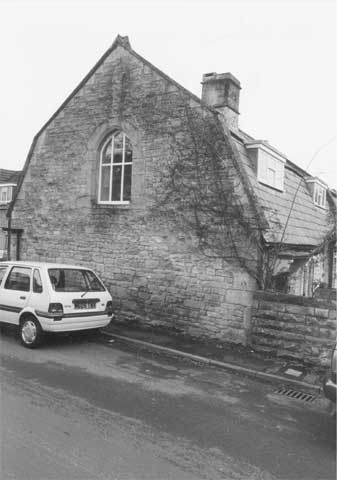

Type of building:
Detached cottage
Listing:
Grade ll
Plan and elevation:
Two units, single pile, single storey with attics in dormers. Two storeys side
extension. Original structure being two single unit, single pile, semi-detached
cottages on, probably, 1 1/2 storeys
Summary of the probable main building
history:
Early-mid 17th Century. Roof reconstructed in the late 18th Century. Late 20th
Century side extension

West elevation
Exterior:
The old part of the property is constructed of coursed rubble stone with dressed
stone quoins. Two entries (one sealed) to serve the original separate cottages.
Both entries with beaded dressed stone surrounds and later applied hoods supported
by scrolled stone brackets. One hood is of stone, the other is of slate, being
a replacement. The brackets do not all match, one being of a different section.
Scratched into the left hand jamb of the near entry is a “W” or inverted
“M” believed to be a superstitious inscription invoking the protection
of the Virgin Mary against witches.
There are two repaired three-light mullion windows of ovolo section. In each case the central light is fitted with an iron casement of ten leaded panes. The flanking lights are fixed and of either10 leaded panes (in the case of the left hand window) or 12 leaded panes (right hand window), some of which are modern replacements. Nevertheless, there are some cylinder glass panes.
The roof is slated and of the gabled gambrel (mansard) type with two modern dormers. The verges of the roof are raised and coped with cross tree finials. The stack is centrally placed to serve the two back-to-back fireplaces of the old cottages and is of ashlar construction.
The return or gable elevation contains a two-arched window of medieval style. The rear (north) elevation has a now blocked wide entry with dressed stone surrounds, which may at one time have been a wagon entry. The rear wall continues beyond the old cottages and appears to be an old boundary wall which has been heightened and now forms the rear wall of the modern extension. This extension replaces an earlier extension of mid 20th Century date (information from the owners).
Interior:
Both ground floor rooms are similar in dimensions and fixtures, each room being
the former living area of the early cottages. Both rooms are spanned by oak ceiling
beams, chamfered and stopped; in one case cyma or lamb’s ear stops, in the
other plain run-out stops. The rooms have large back-to-back four-centred arched
stone fireplaces with simple chamfers and stops. One fireplace has been in-filled
with a smaller squared-headed stone fireplace seemingly of the late 18th Century.
The windows retain their wrought iron catches on the central casements and the
flanking fixed leaded window lights are wired to horizontal saddle bars. The windows
have seats under. The staircase is modern and repositioned. The internal west
gable wall has a pronounced batter.
Date & development:
The wall batter, wall thickness and mullion sections point to an early to mid
17th Century construction date for the original cottages, probably immediately
prior to or immediately after the Civil War years. It is likely that the cottages
were built upon 1 1/2 storeys, that is with gables on the front elevation in the
Cotswold style. The mansard roof to provide more head room is probably a late
18th Century improvement to the living accommodation. As the cottages were built
as a semi-detached pair and then subsequently spanned by the same roof common
ownership for some time appears likely. The simple single unit plan indicates
tenanted or estate/farm workers occupation. The inserted apparent cart entry on
the rear elevation would suggest that for a time at least one of the cottages
was found an alternative usage.
References
- Owners own photograph during renovation
Reference Pictures
| Witch mark on external door jamb | North elevation, showing the blocked large entry | South elevation |
| Three-light mullion window (external) | Three-light mullion window (internal) | Window detail - iron catch |
| Arched, chamfered & stopped fireplace infilled with a smaller square headed stone fireplace |
Survey Drawings
| Ground Plan | South Elevation | Section |
Images from the Archives
| Arched window of medieval style in the end gable to the road (photo
before renovation) |